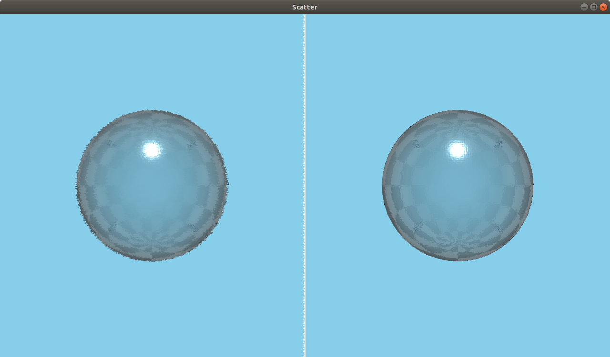

Scatter QML Type
A scatter noise effect. More...
| Import Statement: | import QtQuick3D.Effects 6.7 |
| Status: | Deprecated since 6.5 |
This type is deprecated since QtQuick3D.Effects 6.5. We strongly advise against using it in new code.
Properties
- amount : real
- direction : int
- noiseSample : TextureInput
- randomize : bool
Detailed Description
Use ExtendedSceneEnvironment, MultiEffect, or user-defined effects via the Effect type instead.
Warning: All pre-made standalone effects in QtQuick3D.Effects are considered deprecated starting with Qt 6.5. Applications are advised to use ExtendedSceneEnvironment or MultiEffect instead, when applicable, or alternatively provide their own custom post-processing effect via the Effect type.

Scatters the pixels in a scene, creating a blurry or smeared appearance. Without changing the color of each individual pixel, the Scatter effect redistributes the pixels randomly, but in the same general area as their original positions.
Property Documentation
amount : real |
Determines how much to scatter. The range is [0...127]. The default value is 10.
direction : int |
The direction in which to scatter the pixels. Set to 0 for both horizontal and vertical, 1 for horizontal, and 2 for vertical. The default value is 0.
noiseSample : TextureInput |
The scatter noise texture map. The default is a Texture with source "maps/brushnoise.png".
randomize : bool |
Specifies whether the scattering pattern changes for each frame. The default value is true.